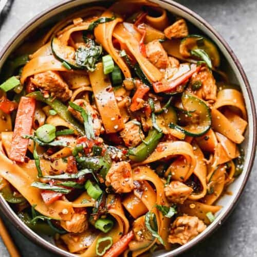

Drunken Noodles

How to prepare delicious Drunken Noodles
The big key here is to properly prep the rice noodles.
No matter what size or thickness you're using, simply soak them in hot water until very flexible, but not soft.
Do not use boiling water as many recipes suggest. I find that makes them soften too quickly, and they tend to get sticky and starchy, which I don't want happening until they're in the sauce.
By the way, you can use any noodle or pasta with this sauce, and the results will still be incredible.
So, no matter what you use, I really hope you give this a try soon!
Ingredients
- 8 ounces dried noodles
- 1/4 cup oyster sauce
- 1 tablespoon asian fish sauce
- 1 tablespoon mapple syrup
- 1 teaspoon white sugar
- 2 tablespoons cold water
- 2 tablespoons vegetable oil
- 1 cup shallots, thinly sliced
- 4 cloves garlic, minced
- 2 1/2 pound skinless, boneless chicken thighs, cut into strips (optional)
- 1 pound chinese brocoli, sliced (optional)
- 4 stalk blank green onions, thinly sliced
- 1 cup fresh thai basil leaves
Steps
- Soak rice noodles in hot water until flexible, 10 to 15 minutes. Occasionally move the noodles around to separate them. Drain the water and cover with a wet paper towel.
- Combine oyster sauce, soy sauce, Asian fish sauce, maple syrup, sugar, and water in a small bowl.
- Heat vegetable oil and sesame oil in a wok, or large frying pan, over medium-high heat. Stir-fry shallots, chile peppers, and garlic until shallots are soft, about 2 minutes.
Move the mixture around the outside of the pan to create a space and add chicken. Sear for 1 minute, then combine with shallot mixture.
Add Chinese broccoli stems and stir-fry until tender, about 2 minutes. Add Chinese broccoli leaves and stir-fry until wilted.
- Add drunken noodle sauce and sliced green onions and mix. Cook until sauce begins to simmer.
Add soaked rice noodles and toss to coat until noodles have absorbed the sauce and are cooked through, about 2 minutes. Remove from heat.
- Stir in Thai basil leaves until wilted. Taste and adjust seasoning if needed. Serve.